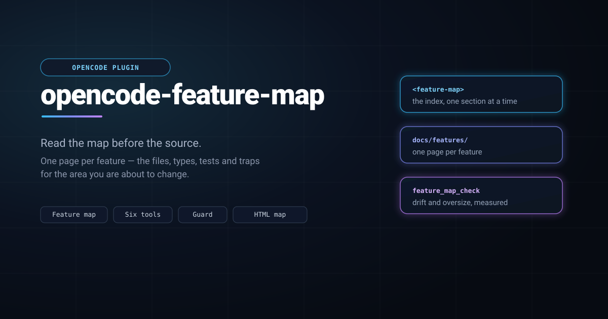

opencode-feature-map


An OpenCode plugin that makes an agent read your project's documentation before it reads your source.
Finding the code for one area usually means grepping the tree, opening three
files, and working out which parts matter. A feature map replaces that with one
page per feature — the files, types, tests and traps for that area — so the
agent can ask for exactly the piece it needs. opencode-feature-map puts that
map in the agent's prompt, gives it six tools to read the map at whatever size
the question deserves, exposes the same six as typed commands, and refuses the
first source lookup of a session in a project that has a map, once, with the
reason and the remedy.
It also gets you the map in the first place: feature_map_init for a project
that has nothing, feature_map_adopt for one that already has documentation,
feature_map_regen for one whose map has outgrown its shape, and
feature_map_upgrade to move a Markdown map to the HTML format.
What you get
| Tool | What it does |
|---|---|
feature_map |
Reads the map: the index, the sections for a topic, one page's shape, one section, one ###, or the whole page. |
feature_map_check |
Reports drift — pages no index row links, rows whose link goes nowhere — and, separately, sections too big to read in one piece. |
feature_map_init |
Scaffolds the workflow into a project: AGENTS.md, HANDOFF.md, docs/SPEC.md and the map index. |
feature_map_adopt |
Reports what an existing project is missing, and writes only the files that do not exist. |
feature_map_regen |
Rewrites an existing map so it reads well: the missing headings and Status: lines, every oversized section divided into ###, and the index reconciled. |
feature_map_upgrade |
Converts a Markdown map to HTML: an .html sibling per page, index.html for the index, .md links rewritten. Additive unless prune. |
Plus a system-prompt section that states the read order, and a guard that enforces it once per session (see What you will notice).
The same six, as commands
Each tool is also a command, so the map is one keystroke away for a person who does not want to ask the agent for it. The reply arrives as a message in the session, without spending a model turn:
/feature-map the index
/feature-map guards the sections for a topic
/feature-map page:enforcement.md one page's shape
/feature-map-check drift and sizes
/feature-map-init the scaffold plan
/feature-map-init write the scaffold, written
/feature-map-adopt focus:sizes one part of an adoption report
/feature-map-regen apply a map rewritten in place
/feature-map-upgrade apply a Markdown map converted to HTMLThe grammar is the tool's arguments, typed: key:value for a named argument, a
bare word for a boolean (write, force, apply, show, full, skeleton),
offset:N, only:a,b, summary:<the rest of the line>, and whatever words are
left over are the topic.
Install
The plugin is a package directory, so it installs by building it and copying it where OpenCode discovers plugins. From this checkout:
npm install
npm run build
npm run plugin:install # → ~/.config/opencode/plugins/feature-mapThat is the whole install. The running server loads it from the plugins
directory; if it does not, opencode service restart — and
opencode plugin list should show a feature-map row.
For a single project instead of every project, install into that project's
.opencode/plugins/ directory:
npm run plugin:install:project # run inside the projectUninstall
npm run plugin:uninstall # removes ~/.config/opencode/plugins/feature-map--remove deletes only a copy of this package: a feature-map directory in
the plugins path that is not this package is named and left alone. For a
project install, npm run plugin:uninstall -- --project — the extra --
forwards the flag past npm.
Why a copy and not a config entry?
OpenCode also loads plugins from the plugins array in opencode.json(c), and
the documented forms for a local directory are an absolute path, a
config-relative path and a file:/// URL. On Windows (verified against
OpenCode 2.0.26) the loader drops all three without a log line — the plugin
simply never appears — while the discovery directory above works everywhere. A
symlink or junction into the checkout does not help either: Windows reports a
junction as a symlink to a directory scan, so it is skipped. So the supported
route is the copy, which is also why scripts/install.mjs overwrites a previous
copy: upgrading is the same two commands.
After a code change
scripts/install.mjs copies the built output (dist/), so edit → `npm run
build→npm run plugin:install`. A running server picks the new copy up from
the plugins directory without a restart. Editing a project's docs needs
nothing.
Starting a new project
Two steps: get the documents, then fill in the parts only you can answer.
1. Ask for the scaffold. Say "scaffold the documentation workflow here" —
or name the tool, feature_map_init. It returns the four documents rendered for
your project and writes nothing:
| File | What it is for |
|---|---|
AGENTS.md |
Process and hard rules: the commands, the workflow, the constraints that apply to every change. |
docs/features/README.md |
The map index and the page template — the entry point the agent reads first. |
docs/SPEC.md |
User-visible behavior, readable without knowing the code. |
HANDOFF.md |
Volatile session state: what is in flight, what is next. |
2. Write them. Either ask for feature_map_init with write: true — which
writes the files directly, the plugin having no sandbox seam to go through — or
write the returned text yourself. Existing files are never replaced; pass
force only when you mean it.
3. Fill in the marked places. The documents say what is still a placeholder:
the layout, the commands and the hard rules in AGENTS.md, and the first row of
the map index. A scaffolded document that ships unfilled reads as authoritative
and says nothing — the placeholders are visible on purpose.
4. Write your first page. Copy the page template out of
docs/features/README.md and give it a feature: what it does, the names in it,
how it works, its settings, the tests that pin it, and what it relates to. Then
ask for feature_map_adopt — it generates the index row from the page's own
title and Read when: line, so you do not hand-maintain the table.
5. Confirm. feature_map_check should report the map agrees with itself.
From then on the loop is the workflow the documents describe: read the map before the code, and update the page in the same commit as the change.
Bringing an existing project
feature_map_adopt is read-only unless you pass apply: true, and it **never
edits a file that already exists**. What it reports depends on what you have.
If your map is Markdown, feature_map_upgrade converts it to HTML afterwards —
additively, unless you ask for prune.
If you already have some form of feature map
Ask for feature_map_adopt with no arguments. You get a one-line summary and
five sections:
- Index — rows whose link does not resolve, pages no row links, rows with no
Read when:trigger, and the rows to add for anything unlinked. - Pages — which of the six mandated headings each page is missing, which
pages have no
Status: … Read when:line, which are not linked. - Sections — every section past the size limit, and whether it already
divides at
###level or genuinely needs splitting. A long section that is already divided is not work, and the report says so. - AGENTS.md — which of the template's blocks your instruction file lacks, by name. Your own wording is never touched; you get the missing blocks to paste.
- Outside the map — markdown under
docs/that is not a page of the map, with its size and section count. Reported, never moved: whetherdocs/GAME.mdshould become a feature page is your call, not the tool's.
Then a plan, where every item is labelled deterministic (derived from what
is already in your files — the index rows, the missing blocks) or judgment
(a Read when: trigger, the content of a heading, where a long section splits).
apply: true writes only the files that do not exist; everything else is text
for you or your agent to place.
If your map is already in good shape, this is short: it reports the drift, the oversized sections and the documents outside the map, and stops.
If your map has outgrown its shape
A map that was written before the workflow existed often reads as one long
section that is too big to hand anyone in one piece. feature_map_regen rewrites
it: it adds the missing ## headings and a Status: … Read when: line, divides
every oversized section into ### chunks that fit a single read, and reconciles
the index with the pages that exist. It changes no prose — the one edit it makes
to a sentence is turning a short bold lead-in into the heading above it — and it
touches nothing outside docs/features/.
A chunk it cannot name from your own words is left visibly unnamed:
### <!-- chunk 1/2: name this -->so naming them afterwards is a pass over a list in the reply rather than a hunt.
It writes nothing until you pass apply: true, and running it twice changes
nothing the second time. Ask for it with show: true if you want to read the
result before it is written.
If you have no feature map
Three cases, and the plugin says which one you are in:
- You have docs but no map (say
docs/with a spec and some notes). The report lists those documents as candidates and tells you there are no pages yet. The migration is two passes: write your feature pages underdocs/features/first — one page per feature, using the template — then runfeature_map_adoptagain and it generates the index from them.feature_map_inithands you the index and page templates to start from. - You have an
AGENTS.mdbut no docs. The report names the instruction blocks yourAGENTS.mdis missing and points atfeature_map_initfor the map skeleton.apply: truewrites the map index,HANDOFF.mdanddocs/SPEC.md, and leaves yourAGENTS.mdexactly as it is. - You have nothing — no docs and no
AGENTS.md. There is nothing to adopt: the reply says so and sends you tofeature_map_init, which is the *Starting a new project* flow above.
Whichever case you are in, the plugin will not rewrite your prose, invent a
Read when: trigger, decide what counts as a feature, or move a file. It
measures, proposes, and — when asked — creates what is missing.
Writing the pages
The map is a set of HTML documents a person can open in a browser and an agent reads as text. One page per feature, with these headings in this order:
<h1><Feature> — <one-line summary></h1>
<p class="status">Status: shipped (vX.Y) · Read when: <the phrase someone would search for></p>
<h2>What it does</h2> what it is for, in a few bullets
<h2>Map</h2> the files, types, functions and test names — the payload
<h2>How & why</h2> the mechanism, the invariants, the traps
<h2>Config keys / UI</h2> a dense table: key, default, range, where it is set
<h2>Tests that pin it</h2> the test names to run first
<h2>Related</h2> links to the other pagesfeature_map_init hands over a full index and page skeleton; you do not have to
write the shell from scratch.
Three rules make the map worth reading:
- Names, never line numbers. Line numbers rot; a symbol name survives a refactor.
- Keep a section under about two kilobytes, splitting longer ones with
<h3>. A section is what a later session reads on its own, and one that outgrew a single read has to be divided before it can be handed over whole.feature_map_checknames the ones that have. - A block is pseudocode unless it must be exact.
<pre class="pseudo">is the default for a code shape;<pre class="verbatim" data-why="…">is for bytes that must survive, and the reason is required. A graph is<pre class="mermaid">— the browser draws it and the agent gets the edge list.
A map written as Markdown still works. feature_map_upgrade writes the HTML
siblings (index.html for README.md) and leaves the .md files in place
unless you pass prune.
What you will notice
In a project that has a map, the first read, grep or glob of a session
is denied once:
read "src/index.ts" reads source in a project that keeps a feature map. Call
feature_map first — add `topic` if you know the area, otherwise it returns the
index — and read the sections for that area: they name the files, functions and
tests, which is cheaper than searching for them. This is the only time this
session will ask; call read again and it will proceed.That is the whole interruption. It never happens twice in a session, never
happens in a project without a map, and never happens when the agent has already
consulted the map. Reading docs/, AGENTS.md, HANDOFF.md or a README.md
is never treated as a source lookup.
If a session is doing something the map does not help with — a large mechanical
refactor, say — set mode to prompt for the instruction without the guard, or
off to silence both.
Configuration
Options are passed to the plugin through its entry in opencode.json(c):
{
"plugins": [
{
"package": "./plugins/feature-map",
"options": {
"mode": "enforce",
"maxBytes": 12000
}
}
]
}| Key | Default | What it does |
|---|---|---|
mode |
enforce |
enforce denies the first source lookup once; prompt keeps the instruction and drops the guard; off silences both. An unknown value falls back to enforce. |
sourceTools |
read, grep, glob |
Which tools count as a source lookup. |
exemptPaths |
docs/, AGENTS.md, CLAUDE.md, HANDOFF.md, README.md |
Project-relative prefixes that are never a source lookup. |
maxBytes |
12000 |
Byte budget for one reply; a capped reply says where to resume. |
sectionsPerTopic |
3 |
How many sections a topic reply may carry. |
maxSectionBytes |
2048 |
The size a section should be readable in; past it, the checker reports the section. |
Where the details live
This README is for using the plugin. The rest is in the repository:
docs/SPEC.md— what a session sees, in full.docs/features/index.html— the feature map for this plugin itself: the map tool, the guard, the boilerplate, adoption, regeneration, the HTML format, packaging.AGENTS.md— how to work on the plugin.HANDOFF.md— where things currently stand.templates/— the boilerplate the plugin hands to a project.
Buy me a coffee
This plugin is free and MIT-licensed. If it earns its keep, you can buy me a coffee via PayPal.
License
MIT — see LICENSE.
Copyright (c) Evert Chin